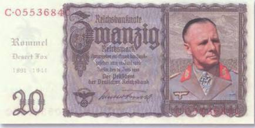
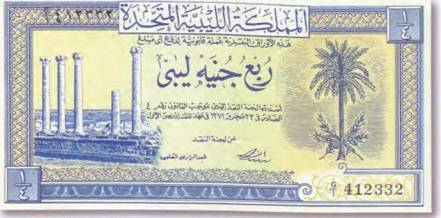
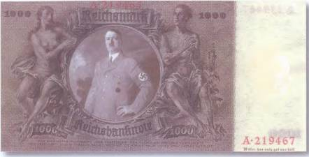
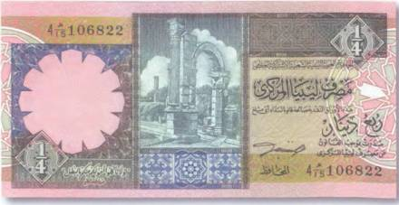
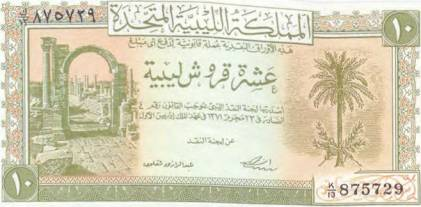

Тайны бумажных денег : В поисках тайного оружия древних ливийцев

В 1940–1942 гг. в пустынях Западного Египта и Восточной Ливии происходили сражения между итало-германскими и английскими войсками. Туда же весной 41-го был переброшен танковый корпус генерала Роммеля. Портрет этого знаменитого немецкого полководца, со смертью которого связано, наверное, не меньше тайн, чем с его жизнью, размещен на коллекционной боне, сработанной уже в наше время. За ее основу была взята действительно обращавшаяся в Третьем рейхе банкнота в 20 рейхсмарок 1939 г. (рис. 56).
Имеются сведения, что при штабе Роммеля находилось несколько секретных агентов, задачей которых был поиск доказательств существования «Зова Миург» — страшного оружия древних ливийцев.

Эта загадка истории не дает покоя ученым не одного поколения. А своими корнями она уходит в глубину тысячелетий. Происхождение ее связывают с властительницей видений, дурмана и снов коварной Миург.
Особое внимание этой теме в своей книге «Хранители древних тайн» уделяет известный публицист и исследователь непознанного Вадим Бурлак. Со слов писателя, Миург поклонялись древние ливийцы. Их племена, как известно, населяли Северо-Западную Африку. Они — предки нынешних берберов. Дикие, свободолюбивые, непокорные пастухи и воины. Во втором тысячелетии до н. э. ливийские племена вели частые войны с могущественным в те времена Египтом. Казалось бы, что стоило многочисленной и хорошо вооруженной армии египтян расправиться с дикими племенами? Но у ливийцев было тайное оружие!
Земля Ливии усеяна осколками прошлого. Однако со времен противостояния ливийцев Египту сохранилось не так уж и много артефактов. Чего не скажешь о следах, оставленных римлянами. Сотни колонн, под стать скелетам мифических великанов, и по сей день торчат из песков ливийских пустынь. Они запечатлены и на национальной валюте государства. Как, например, на боне в четверть фунта 1951 г. (рис. 57).
Легенды о «Зове Миург» не давали покоя завоевателям. Поисками этого оружия занимались и немцы во время Второй мировой войны. В окружении Гитлера считали, что оно досталось ливийским племенам от какой-то более древней цивилизации. Может быть, даже от атлантов. Гитлер сам был большим мистиком и очень интересовался подобными загадками истории. А поэтому хорошо понимал, что обладание подобным оружием могло бы в корне изменить исход войны.

Банкнотных изображений Адольфа Гитлера никогда не существовало. Так что представленная здесь коллекционная бона — сомнительная дань современных почитателей этому злому гению XX в. — скорее всего, единственная в своем роде (рис. 58).
Как утверждает г-н Бурлак, с помощью тайного оружия древних ливийцев можно было создавать видения, которые бы меняли направления движения вражеских армий или заставляли бы одну ее часть атаковать другую. А миражи! Жутко представить себе исход сражения, в котором тысячи вооруженных людей, видя впереди равнину или дорогу, в действительности попадали бы в непроходимые болота или зыбучие пески. В этом случае армия была бы обречена! И подобные случаи уже имели место в истории войн…


Если верить легендам, Миург научила ливийцев изготовлять из фиников хмельной напиток, готовить лекарства и колдовские зелья. Много раз с помощью подвластных ей миражей она заводила египетские военные отряды в непреодолимые пустыни. И воины погибали от зноя и жажды, погребенные песками. Кроме того, Миург умела передвигать по пустыне колодцы и создавать ложные оазисы (рис. 59).
Своим дыханием она перекатывала, куда ей заблагорассудится, тяжелые каменные шары, служившие вехами-ориентирами для караванов. Некоторых людей она вводила в вечный сон, заставляя переступать черту реальной жизни и переходить в мир ее безраздельного царства — Миургию. Никому не удавалось вернуться оттуда живым. Этим людям уже не нужны были вода, еда, земные наслаждения. Оборванные, высохшие, с полузакрытыми глазами, они бродили по пустыне из селения в селение.
Ливийские колдуны умели испрашивать этих людей у Миург на время войн. И уведенные в Миургию, они как бы возвращались ненадолго в реальный мир. Они были видны в этом мире, но оставались в том. Им вкладывали в руки оружие. И не зная жалости, страха и усталости, не чувствуя боли, они разили врагов. Военная добыча и почести их не интересовали. Главное — убивать, пока не будет позволено снова полностью вернуться в Миургию.
В 941 г. до н. э. вождь ливийских племен Шешонк покорил Египет, стал фараоном Шешонком I и основал XXII династию, названную историками Ливийской. Не обошлось ли и здесь без таинственного оружия ливийцев?
В VI в. до н. э. Египет завоевали персы во главе с царем Камбисом — сыном знаменитого Кира II. Закрепившись в долине Нила, Камбис решил двинуть войска на запад Африки и прежде всего — в оазис Сива. Что заставило Камбиса во главе 50 тыс. воинов отправиться через Ливийскую пустыню? Одни утверждали, что царь выступил против воинственных племен, другие — что персы нуждались в новых владениях. А может, причиной тому был разлад между повелителем персов и служителями храма бога Амона? Ведь жрецы напророчили ему скорую гибель. А еще ходили слухи, что Камбис решил овладеть миражным оружием «Зов Миург». Что из этого правда — неизвестно! Спустя семь дней персы достигли большого оазиса Харга, а затем… бесследно исчезли.

Взгляните на развалины римского города на боне в 10 ливийских пиастров 1951 г. (рис. 60).
Кто знает, может быть, и в гибели этого поселения свою роковую роль сыграло оружие с удивительным и одновременно пугающим названием «Зов Миург»?